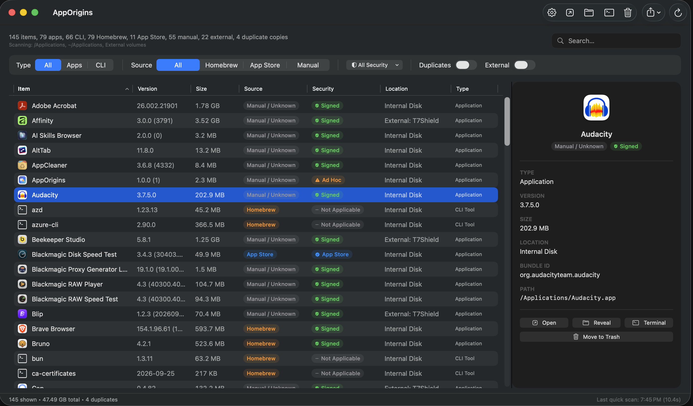

Trace the source.
Homebrew, App Store, or a manual install. See where your apps and CLI tools came from at a glance.
A clearer view of your Mac
Your apps. Their origins.
One clear view.
See what’s installed, where it came from,
and what’s taking up space.
macOS 13+ Native SwiftUI Open source

Less digging. More clarity.
Homebrew, App Store, or a manual install. See where your apps and CLI tools came from at a glance.
Spot duplicate app copies, compare sizes, and include external drives when you need the full picture.
Inspect signing status. Open an app, reveal it in Finder, or export your filtered view as CSV or JSON.
A quick look
Scan. Filter. Inspect. Everything in one native window.
Meet your Mac’s software.
Download AppOriginsmacOS 13 or later. The current build is unsigned and not notarized.
For installation details, see the README.